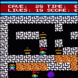

|
|
Tools and source code for .NET and C#:
|

|
Reflector for .NET
Reflector is a class browser for .NET components.
It supports assembly and namespace views, type and member search, XML documentation, call and callee graphs,
IL, Visual Basic, Delphi and C# decompiler, dependency trees, base type and derived type hierarchies and resource viewers.
reflector.zip - .NET Reflector
|

|
Resourcer for .NET
Resourcer is an editor for .resources binaries and .resX XML file formats
used with the .NET platform.
The program allows the integration of bitmaps,
icons and text strings into resource packages.
Resourcer allows editing of name/string pairs, import of various kinds of data
formats (bitmaps, icons, etc) and merging of resources from different
sources.
resourcer.zip - .NET Resourcer
|

|
CommandBar for .NET
The CommandBar class library extends System.Windows.Forms with classes for
CommandBar, ReBar, CoolBar, and bitmaped menu controls.
A unified command item representation is provided which makes it
easy to switch the rendering between Menu, ToolBar and ContextMenu.
24 bit alpha channel images are supported on Windows 2000.
commandbar.zip - Library + C# source code
|

|
Writer for .NET
Writer is a simple WYSIWYG editor for HTML files.
The program allows you to edit HTML files using simple editing functionality like Undo, Redo, Cut, Copy, Paste, Find, Replace.
Writer also supports text layout and formatting, hyperlink editing and insertion of dates and pictures.
writer.zip - is available here.
|
|

|
Digger for .NET
.NET version of a Boulderdash game.
digger.zip - Desktop and Smartphone version + C# source code
|

|
Mapack for .NET
Mapack is a .NET class library for basic linear algebra computations.
It supports Norm1, Norm2, Frobenius Norm, Determinant,
Infinity Norm, Rank, Condition, Trace, Cholesky, LU, QR, single value decomposition,
least squares solver and eigenproblems.
mapack.zip - Class Library for .NET + C# source code
|
Disclaimer: The software and source code on this website is provided "AS IS" with no warranties of any kind.
The entire risk arising out of the use or performance of the software and source code is with you.
|